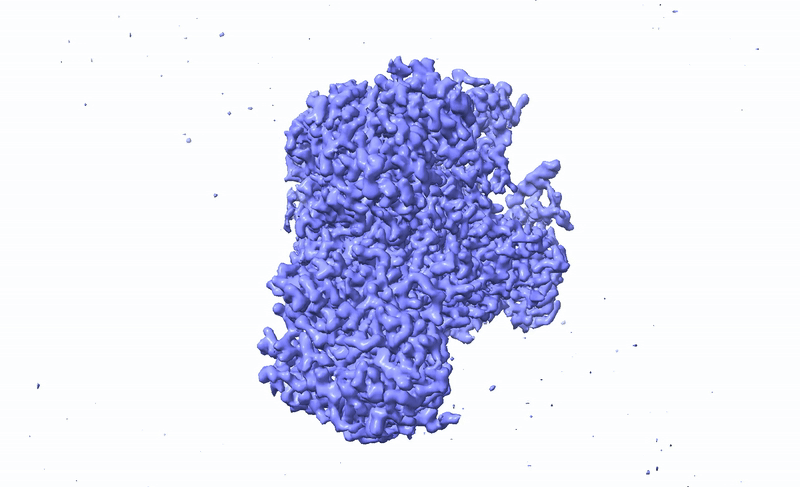
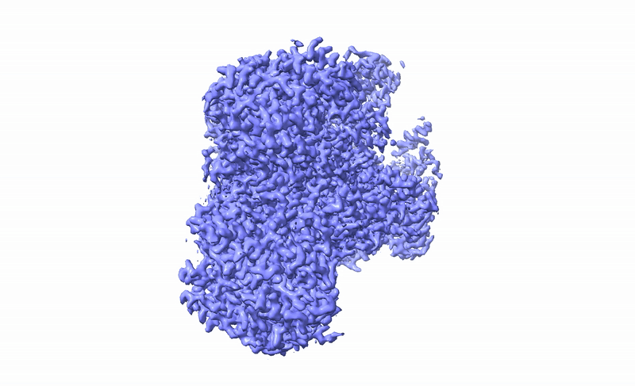
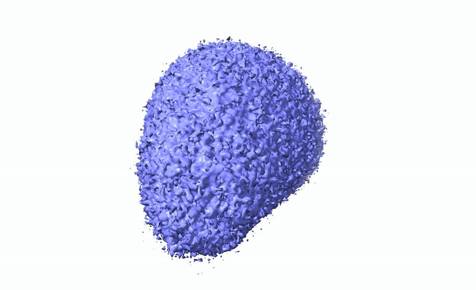

Implicit Neural Representations (INRs) provide a powerful continuous framework for modeling complex visual and geometric signals, but spectral bias remains a fundamental challenge, limiting their ability to capture high-frequency details. Orthogonal to existing remedy strategies, we introduce Dynamical Implicit Neural Representations (DINR), a new INR modeling framework that treats feature evolution as a continuous-time dynamical system rather than a discrete stack of layers. This dynamical formulation mitigates spectral bias by enabling richer, more adaptive frequency representations through continuous feature evolution. Theoretical analysis based on Rademacher complexity and the Neural Tangent Kernel demonstrates that DINR enhances expressivity and improves training dynamics. Moreover, regularizing the complexity of the underlying dynamics provides a principled way to balance expressivity and generalization. Extensive experiments on image representation, field reconstruction, and data compression confirm that DINR delivers more stable convergence, higher signal fidelity, and stronger generalization than conventional static INRs.



@article{park2025dynamical,
title={Dynamical Implicit Neural Representations},
author={Park, Yesom and Kan, Kelvin and Flynn, Thomas and Huang, Yi and Yoo, Shinjae and Osher, Stanley and Luo, Xihaier},
journal={arXiv preprint arXiv:2511.21787},
year={2025}
}